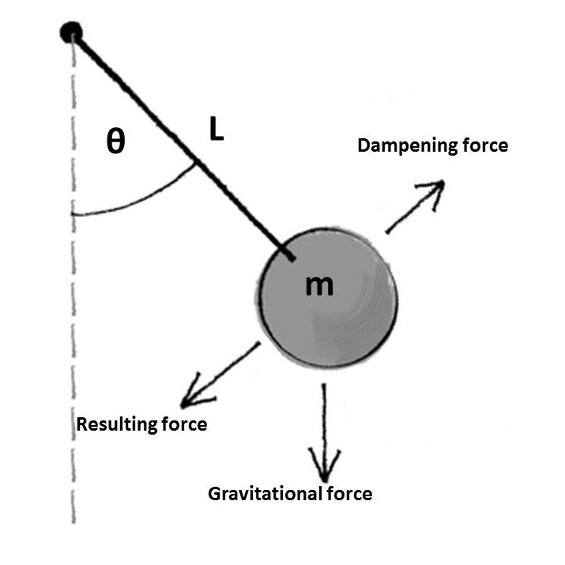
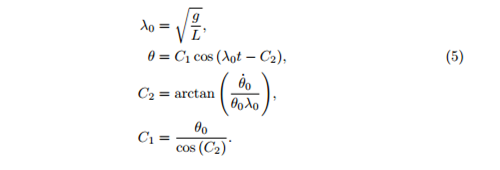
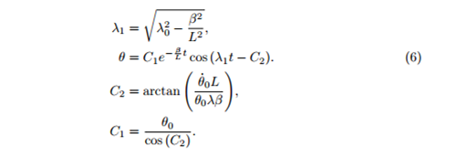
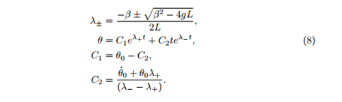

This blog post came about after watching a youtube video of Newton's Cradle in a research group meeting. My research group is a made up of cloud modellers. Some of us work with small one dimensional cloud models investigating how water and ice content vary in time, while others use larger scale three dimensional models, which also include the spatial developments of cloud structures. The enjoyment we gain from solving problems is one thing we all have in common. I guess that is the ultimate drive for any researcher. The problem Matt asked us this particular week was "Can we model Newton's Cradle?".
To save this post from becoming an essay, I've broken the problem down into three seperate blogs. The first part was focused on defining the problem, this second part is solving the problem and the final part will be the modelling.
Solving the problem
At the end of the previous blog I did warn you that this post will contain a bit of maths, but I guess if you're reading this then it either hasn't put you off, or it's my mum reading this. The maths isn't going to be too heavy and I will explain each step.
Firstly a quick reminder of the equation describing the motion of a single pendulum,
Next we rearrange the equation, replacing the dampening factor b with mβ, where β is the dampening factor per unit mass of the bob, and also replacing sin(θ) with θ. By making the assumption that θ is small we find that sin(θ)≈θ, which simplifies the problem and allows an analytical solution. After a bit a algebra we get,

By assuming a solution in the form, θ=eλt and substituting into equation (3), we find λ,
There are now four possible solutions to our problem, which depend of the value of λ. The first is the case of no damping, where β=0, the second is the under damped solution where β2<4gL, next the critically damped solution β2=4gL and finally the over damped case β2>4gL. The two constants of integration were found in each of the four cases using the initial conditions from equation (2).
No damping

Under damped

Critically damped
Over damped

Equations (5)-(8) describe how the angle θ changes with time in each of the four cases for a single pendulum. In the final blog, we find out why we are particually interested in equation (6), the under damped solution and use it to model multiple pundulums, creating Newton's cradle.